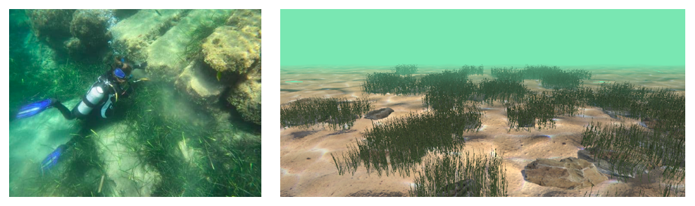
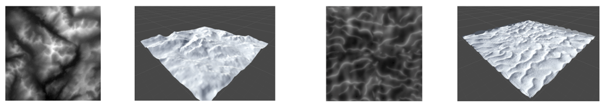
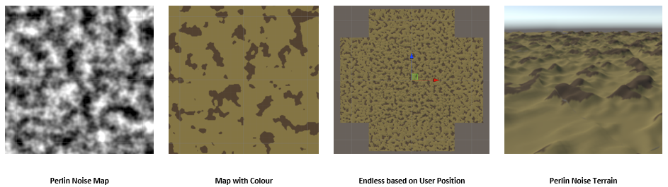
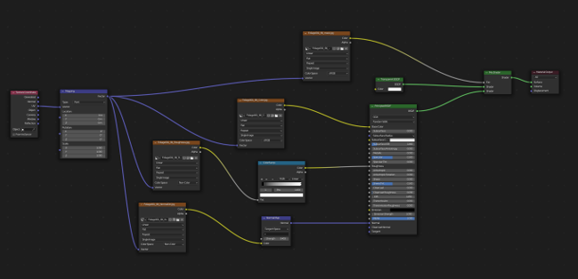
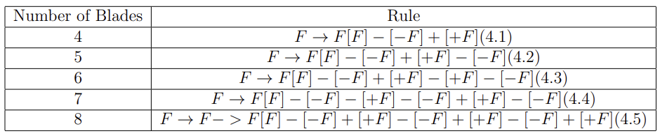
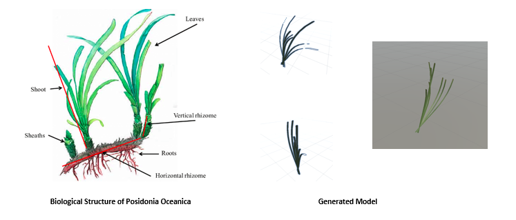
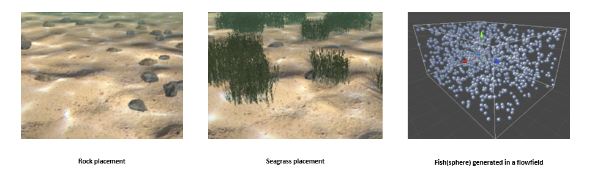
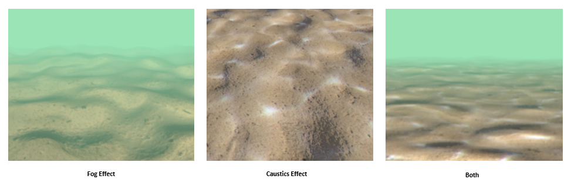

This project aims to procedurally generate the a flock of fish and posidonia oceanica, the underwater vegetation, at the ancient underwater archaeological site of Amathus in Cyprus. The project is implemented in Unity and is mostly used for virtual reality simulations for people who are not able to dive to the scene.
Fig.1 Ancient harbour of Amathus in Cyprus (left) and procedurally generated underwater scene (right)
There are mainly three parts in this project: sea floor terrain procedural generation; underwater vegetation generation and object placement; underwater graphics effects. For the first part, the sea floor terrain was generated via two different ways: CSharp script using Perlin noise, and using a height map with real world data. For the underwater vegetation generation and object placement, specifically, posidonia oceanica, a single grass blades was created using Blender, then the Lindermayer system algorithm was applied to generate a full plant. Then rocks were placed on the terrain with 2D Perlin Noise Sampling. Then the posidonia oceanica were generated within a certain radius around the rocks. For underwater graphics, fog effect and caustics effect was explored.
With an initial design framework in place, implementation began. As with the background research and design, the implementation was divided into three parts: the generation of the underwater terrain, and the generation and placement of underwater objects, the image effects of the underwater environment. Then they are implemented sequentially.
1 Terrain Generation
1.1 Heightmap Terrain
A very convenient way to generate a terrain is to import a height map in raw format into unity. This method is easy but has very obvious limitations. It is unnecessarily time consuming to keep changing the imported height map when the generated terrain does not meet our expectation. We wanted to get a terrain that could be adjusted by tuning different parameters, which makes it more in line with the idea of procedural generation, so the next step was to use Perlin noise to generate and debug the terrain.
Fig.2 Heightmaps and corresponding generated terrain
1.2 Perlin Noise Terrain
As the imported heightmap terrain did not meet expectations, perlin noise was chosen to generate terrain that simulated the natural environment of the seabed in order to be able to adjust the height undulations of the terrain through parameters. A single perlin noise produces a highly repetitive terrain with little detail, and multiple perlin noises can be scaled and superimposed to increase the variability and detail of the terrain.
Fig.3 Perlin Noise Terrain
2 Object Generation and Placement
The procedural generation and placement of underwater objects consisted mainly of the placement of rocks, the generation of vegetation, and the generation of fish. The simulation of vegetation, also known as Neptune grass, is a main part of this project.
2.1 Seagrass Generation
The generation of Neptune grass starts with a single leaf of the plant. In this section, the LinderMayer System algorithm is used to generate the entire plant from a single leaf following certain rules. Neptune grass is significantly different in appearance from the traditional common underwater vegetation laminaria plant, so the rules of the L-system for generating the plant and the model of the individual leaves have to be adapted to the biological information of Neptune grass in order to approximate the appearance of the real plant.
The choice of Neptune grass blades was ultimately modelled using blender, with all the material node information baked in blender into the texture map.
Fig.3 Shader graph of seagrass leaf in blender
The whole Neptune grass is generated using the lindermayer system algorithm. The first step was to determine a RULE that would make the generated plant most closely resemble the appearance of Neptune grass. Neptune grass produces about three plants with four to eight blades per root. The rules used in this project is shown in the table.
Tab.1 Number of blades and corresponding rules
The resulting plant will be different each time and will be random, as if it were a different plant of the same species. Figure.4 shows a comparison between a generated seagrass and an actual plant. 
Fig.4 Graph of an actual plant and a generated plant
2.2 Object Placement
All objects are placed procedurally, each time the game is started, stones are generated sequentially using the noise function, and then a certain number of individual Neptune plants are generated with a certain probability within a certain area, centred on each stone, thus creating random clusters around the stones. The stones are generated based on 2D perlin noise sampling.
After the position of the stone has been determined (Figure.5 left), the underwater plants are generated within a certain radius around the stone. The initial method used was Poisson disc sampling, but the circle centred on the stone would be perfectly filled with water plants, giving a more regular circle, which would be unnatural in comparison to reality, so a random generation was used. The probability of water plants being generated around each stone is 75 percent, which can also be adjusted as a parameter.
2.3 Fish Generation
As for the fish simulation, the initial design was for fish that met the three characteristics in the depths of the ocean, but again due to the shallow water in which the Neptune grass is located, the final design of the fish was chosen to be small fish randomly generated at different heights and locations, in a set flowfield based on noise movement.
Fig.5 Object placement (left and middle )and fish flock generation (right)
3 Underwater Image Effects
Underwater simulation is challenging due to the irregularity of water movement and the complexity of the interaction between the sea surface and light and shadows such as sunlight. In this part, the fog effect based on depth was implemented and a caustics effect was faked by projecting two caustics textures onto the terrain. The real caustics effect that causes by light travelling through the water surface is still under development.
3.1 Fog Effect
It is necessary to simulate the effect of low visibility in an underwater environment. This is very similar to the effect we normally see with fog, so we simulate the underwater environment by simulating fog. The colour of the fog, the range of visibility in front of us and the position of our eyes which is the position of our camera need to be determined. In order to achieve the effect of the distance being covered by fog, a depth-based fog is taken here, i.e. the fog colour is mixed into the scene colour to varying degrees depending on the depth.
3.2 Caustics
Caustics is a common physical phenomenon that is produced by the passage of light through a medium. It occurs in many forms and can often be seen at the bottom of the sea or swimming pool. As there is a lot of light to simulate, recreating a realistic scatter is very time consuming and expensive, and can often be faked by projecting a 2D texture onto the terrain of the sea floor and shifting the offset of the textures to animate their movement. In this project, the scatter effect is generated by creating a single caustics texture through the terrain shader.
Fig.6 Underwater image effects
In the project, an underwater scene is presented. The terrain is generated procedurally to model a realistic sea floor and it consists of 9 planes to form the full underwater scene. The sea floor terrain was generated via three different ways and compared: CSharp script using Perlin noise, Shader using tessellation and noise, or using a height map with real world data. Then it was expanded to a terrain of infinity no matter where the user goes, so the user will not feel like exploring in a box. For underwater graphics effect, lighting and fog effects were considered. As the site is not deeply immersed, only caustics effect was presented. The distance-based fog effects was implemented according to camera depth. To model a deformation effect usually happens when seeing things through water, a directional noise image effect was used to distort the camera image. For the underwater vegetation generation, to model the posidonia oceanica, which is the special underwater vegetation around Amathous, a single grass blades is created using Blender, then the Lindermayer system algorithm is applied to generate a full plant. Vegetation was spawned around rocks in a radius with a specific chance to form a cluster and the distribution of rocks is according to 2D Perlin Noise sampling. The animation of seagrass was first implemented using Shader Graph in Universal Render Pipeline (URP), but as Shader Graph is not compatible with the underwater scene using default render pipeline, vortex animation of seagrass was re-implemented with Shader using default render pipeline.
Fig.4 Ancient harbour of Amathus in Cyprus (left) and procedurally generated underwater scene (right)
The generated underwater scenes look very close to the real shallow water environment and the generated seagrass clusters look very close to the real posidonia oceanica underwater clusters, as expected. However, there is still a lot of room for improvement throughout the project and there are still some new ideas that need to be implemented to make the scenes more logical and realistic.